Select and Operate Room
Views to the Rooms | |
View in System Browser | Floor Plan View |
|
|


- System Manager is in Operation mode.
- In the System Browser or floor plan view, select the room to operate.
- The room graphic opens and displays the most important values in the Contextual pane.
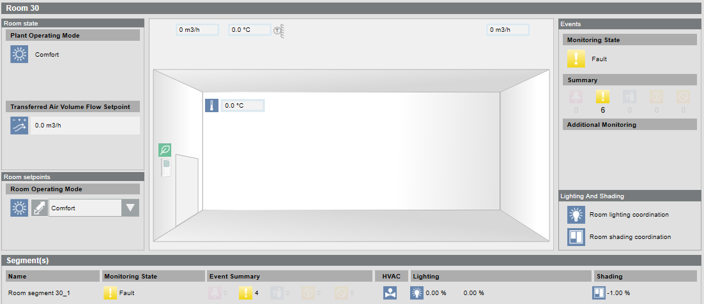
- Click Next
 .
. - A summary is displayed of the setpoint generation and plant operating mode.
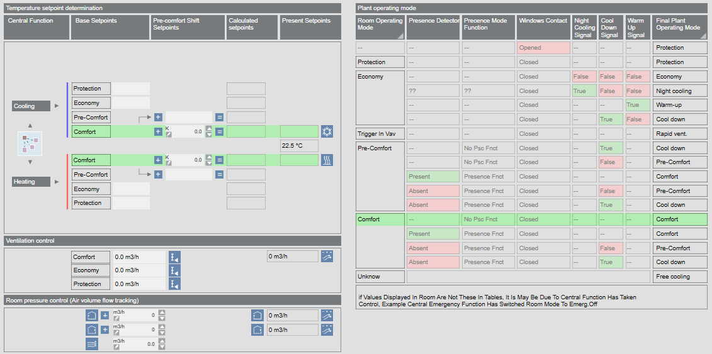

NOTE:
Workflows are described using the Application View, Management View, and Logical View. Additional views such as User View or Customized View are not described.
Changing Operating Mode
- The room is selected and the room graphic displays.
- In the Operation tab, select the Room operating mode property.
- Click Manual.
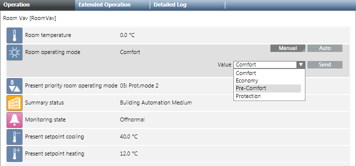
- In the Value drop-down list, select the operating mode:
- Comfort
- Economy
- Pre-Comfort
- Protection
- The change to room operating mode occurs at priority 13 and can be overwritten locally.
- Click Send.
- The message
Manual successfulis displayed. - You can also execute the following room conditions:
- Temporarily switching on Comfort
- Applying Scene
- Change operating mode using Extended Operation
- Changing a setpoint
- Switching Lights On and Off
- Enabling manual lighting
- Positioning Blinds
NOTE:
Priority 13 is enabled and set to ZERO if you click the Auto button.
‒ No change is made to room state if priority 1‒12 is pending.
‒ The room state is executed as per pending priority if priority 14‒16 is pending.
Temporarily Apply Operating Mode Comfort
Use this function to control a room to Comfort outside the defined occupancy times. The room is controlled to Comfort for two hours if the function is activated.
- The room is selected and the room graphic displays.
- In the room graphic, select Room > Room operating mode.
- A red frame is displayed when selected.
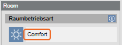
- The Operation tab displays properties Room operating mode and Comfort button.
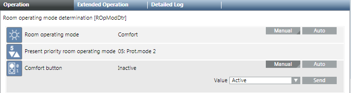
- Select the Comfort Button property and click Manual.
- In the Value drop-down list:
- Active (The room is controlled for two hours to Comfort and then automatically set to Inactive).
NOTE: The time can be set in the Setup and Service Assistant under the Time for Comfort Button property. - Inactive: The Comfort state is switched off and set to Enable after time expires.
- Click Send.
- The message
Manual successfulis displayed.
Acknowledging Multiple Alarms in a Segment
Scenario: If an alarm occurs in a room segment, multiple alarms may need to be acknowledged, depending on the type of alarm. Common alarms are used to avoid acknowledging multiple alarms.
- Desigo firmware 1.21.40.xx or higher must be installed on the automation station.
- In System Browser, select Logical view.
- Select Logical > [Hierarchy name] > [Hierarchy 1‒n] > [Room] > [Room segment] > Room segment monitoring state.
- The Default tab displays with the room segment graphic.
- Select section Alarm.
- Select the display alarm.
- Click the Extended Operation tab.
- Select property Acknowledge All (included all related).
- Click Ack All.
- All alarms for the room segment are acknowledged.
Applying Scene
Use this function if you need a scene for the room operating mode.
- The room is selected and the room graphic displays.
- In the room graphic, select room operator unit.
- A red frame is displayed if selected
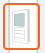
. - The Operation tab displays the Value and In progress properties.
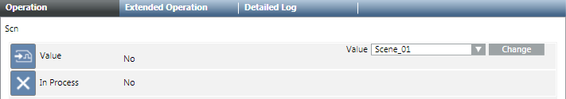
- Select the Value property.
- In the Value drop-down list:
- Scene_x (the room is controlled by the selected scene)
- No Action (the state switches to automatic mode)
- Click Change.
- The message
Change successfulis displayed. - The room operating mode changes to the corresponding scene.
Creating or Editing a Scene
The following items need clarification before creating, adding, or changing a scene:
- What does scene refer to?
- What objects are switched using the scene?
- In which sequence and at what delay times are the objects controlled?
- At what priority must objects be controlled (standard priority for scenes is 7)?
- System Manager is in Engineering mode.
- A scene object is available in the application.
- The existing scene texts are taken over or created or modified in workflow Text Group.
- In System Browser, select Logical view.
- Select Logical > [Hierarchy name] > [Hierarchy x‒n] > [Room] > Rscn and then the scene object Scn.
- The Standard tab opens and displays available scenes. Only an empty entry Scene_01 is displayed in the Command Table Action List if no scenes are defined.
- (Optional) Scene texts must be created first if the scene texts are not available in the text group.
- Double-click the text Scene_01 and enter a name for Scene 1, for example, Meeting.
NOTE: Texts must match the displayed text group. A note is displayed if the text does not match and the text group needs to be modified. - Click New and enter a name for scene 2, for example, Presentation. Create all other scenes.
- Click Save
 .
.
- Scenes are created with the correct texts.
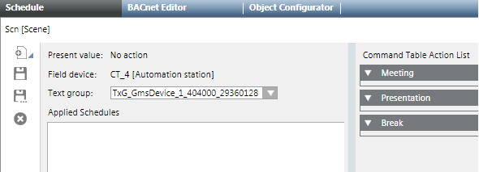
Assigning Objects to Scenes
- The scenes are created and have the correct designation.
- The Schedule tab is selected.
- In System Browser, select Logical view.
- Select Logical > [Hierarchy name] > [Hierarchy x‒n] > [Room] > [Room segment] > Object type.
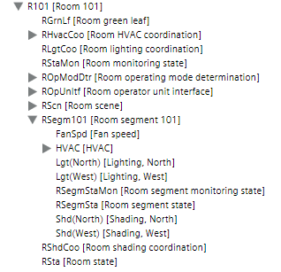
- Drag the first object, for example, ROpModDtr (Room operating mode) with drag-and-drop to the [Meeting] expander until the cursor
 changes.
changes.
NOTE: The sequence from top to bottom determines the object workflow within a scene. - The object is added to all scenes.
NOTE: Scenes added after the fact must be configured individually. - Open the folder for segment RGsegm.
- Drag additional objects, for example, FanSpd (fan speed), Lgt (Light) or Shd (blinds) to the [Meeting] expander.
NOTE: The only way to change the sequence is to delete assigned objects. - Select the [Meeting] expander and enter parameters Value, Delay and Priority.
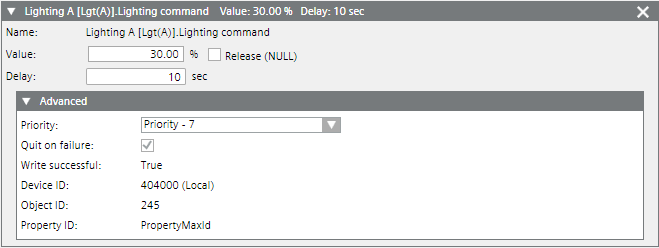
- Repeat configuration for all created scenes.
- Click Save.
- The new or edited configuration is saved on the Desigo automation station.
- Test all scenes for functionality.
- Scenes are tested and operate as per the requirements of each scene.
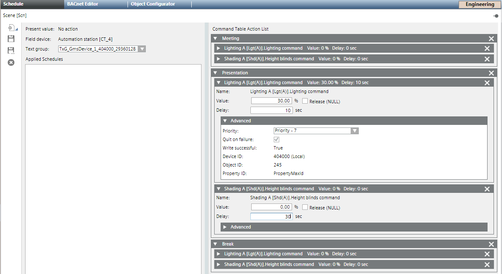
Example: Scene Configuration | ||||||||
| ROpMod | Prio. | Light | Prio. | Blinds | Prio. | Fan | Prio. |
Meeting | Comfort | 13 | 100% | 7 | Open | 7 | On | 7 |
Presentation | Comfort | 13 | 30% | 7 | Close | 7 | On | 7 |
Pause | Protection | 13 | 0% | 13 | Open | 13 | On | 13 |
Editing Text Group
The Text Group is created during engineering data import and saved in the library project folder. Texts are not available on the management platform if you define other scenes; they must be created first.
- The System Manager is in Engineering mode.
- The scene object is selected and the Schedule tab is open.
- In System Browser, select Management View.
- Select Project > System Settings > Libraries > Project > Common > Common > Texts > [Text group number].
- Do the following:
- Change: Click the row and edit the text.
- New text: Click Add new row
 :
:
a. In the Value column, enter a one-up number.
b. Enter a text for each language. - Click Save.
- The Text Group is created.
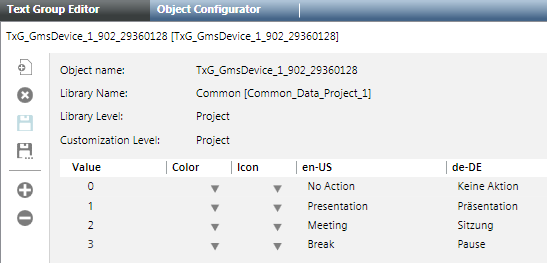
NOTE 1:
Texts added or changed on the management platform are not updated on the room operator unit.
NOTE 2:
The maximum value on the scene object must be adapted if the number of scenes is changed. The maximum value is determined by the number of scenes displayed in the Value drop-down list.
Modifying Maximum Value for Scenes
- The Scene object is selected.
- Click the Object Configurator tab.
- Open the Properties expander.
- Select the Present_Value property and then the Details expander.
- In the Max text field, enter the corresponding number of defined scenes.
- Click Save.
- The scenes defined in the text group are displayed in the Value drop-down list.
Override Operating Mode
- The room is selected and the room graphic displays.
- In the room graphic, select Room > Room operating mode.
- A red frame is displayed when selected.
- The Extended Operation tab displays the properties.
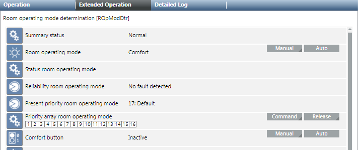
- Select the Priority Matrix Room Operating Mode property and click Manual.
- Displays the entry fields for Priority and Value.

- In the Priority drop-down list, select option 08: Man.mode 2.
NOTE: In principle, any priority between 1-15 can be selected. Other BACnet operator units also use priority 8 though. So that any BACnet operator unit can reset the override to priority 8. - In the Value drop-down list, select the Operating mode:
- Comfort
- Economy
- Pre-Comfort
- Protection
- Click Send.
- The message
Manual successfulis displayed.
Note:
Successful operation only possible if you can write at a higher priority than is displayed on the status bar for the Priority Matrix. You can, for example, overwrite at the present priority 13 at 8, but not 7.
The display arrow indicates an active priority of 1 to 8. At priority 8, you can change the operating mode, for example, Protection to Pre-Comfort.
Changing Setpoints
- The room is selected and the room graphic displays.
- Select Room > Preset Setpoints and then:
- Cooling
- Heating
- A red frame is displayed when selected and the most important values for heating and cooling are displayed in the Operation tab.
- Select for:
- Cooling, property Cooling setpoint Comfort
- Heating, property Heating setpoint Comfort
- Click Manual.
- In the Value drop-down list, enter a new setpoint.
- Click Send.
- The message
Manual successfulis displayed.
Display Present Setpoint
The present room setpoints are calculated using various indicators. The setpoints used to control the room depend on the room operating mode and the set room adjustment.
- The room is selected and the room graphic displays.
- Click Next .
- Plant operating mode and Temperature setpoint determination are displayed.
- The table displays the setpoint calculations (from left to right).
- The lines in green display the present setpoints for the room.
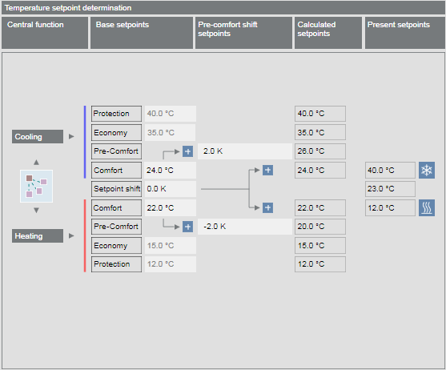
- Back
 switches you back to the room graphic.
switches you back to the room graphic.
Display Room Segment Overview
- Click Next .
- A summary of individual room segments is displayed.
Example with three Variable Air Volume segments: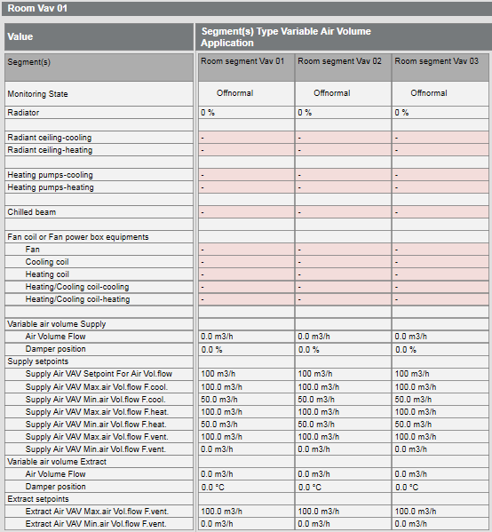
Example with three fan coil unit segments: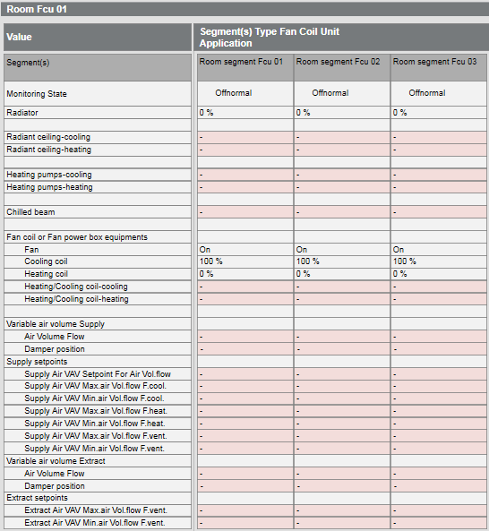
- Back switches you back to the room setpoints.
Switching Lights On and Off
Control is automatic by default based on installed switches, presence detector, and room requests. Lighting can be switched on and off for individual segments as needed.
- The room is selected and the room graphic displays.
- Select Room > Segment(s) and then the desired room segment in the Names column.
- Select the display in the Light column
 and click 0.00%.
and click 0.00%. - A red frame is displayed when selected and the properties are displayed in the Contextual pane of the Operation tab.
- Select the Lighting command property and click Manual.
- In the Value drop-down list, enter a new value.
- Click Send.
- The message
Manual successfulis displayed.
NOTE:
You can switch lighting as follows:
1. Select the room segment.
2. Select the Related Items tab.
3. Select Graphics and then the segment link.
4. Select the light object and then the Lighting command property in the Operation tab.
Positioning Blinds
Control is automatic by default based on installed switches, presence detector, and room request. You can raise and lower blinds for individual segments as needed.
- The room is selected and the room graphic displays.
- Select Room > Segment(s) and then the desired room segment in the Name column.
- Select the display in the Blinds column
 and click 0.00%.
and click 0.00%. - A red frame is displayed when selected and the properties are displayed in the Operation tab.
- Do the following:
- Change angle position:
a. Select the property Angle blinds command and click Manual.
b. In the Value drop-down list, enter the new value.
c. Click Send. - The message
Manual successfulis displayed. - Open or close blinds:
a. Select the property Height blinds command and click Manual.
b. In the Value drop-down list, enter the new value.
c. Click Send. - The message
Manual successfulis displayed.
NOTE:
You can operate the blinds as follows:
1. Select the room segment.
2. Select the Related Items tab.
3. Select Graphics and then the segment link.
4. Select the blinds object and then, in the Operation tab, the property Angle blinds command or Height blinds command.
Operating the Room Lab
You can operate the room lab directly in the graphic or in the Operating tab.

- In the System Browser, select Logical View.
- Select Logical > [Hierarchy name] > [Hierarchy level 1-n] > [Lab room].
- The Default tab displays with the lab graphic.
- In the graphic, select option:
- Room operating mode
- Room pressure setpoint
- Present setpoints cooling or Heating
- Click an entry in Segment to receive detailed information on the room lab.